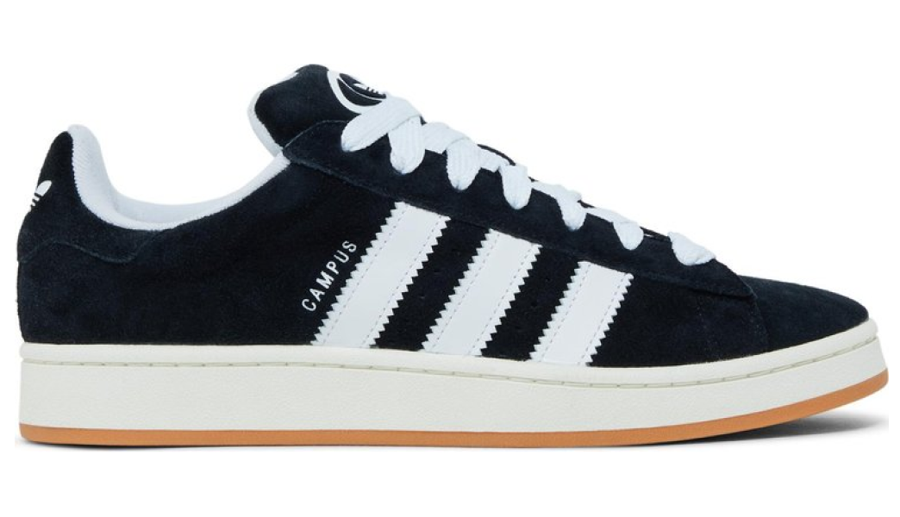

Adidas Campus 00s
Core Black
Adidas AG (сокращенно от "Allround Development of Industrial Sport", что означает "Всестороннее развитие индустриального спорта") была основана 18 августа 1949 года в Германии братьями Адольфом (Ади) Дасслером и Рудольфом (Руди) Дасслер.
Изначально они планировали открыть магазин по продаже спортивной обуви, но вскоре поняли, что их страсть - это создание собственной уникальной обуви для спорта. В 1920-х годах братья Дасслер основали мастерскую по изготовлению обуви, которая стала очень популярной среди спортсменов из-за своего высокого качества и комфорта. После Второй мировой войны Ади и Руди решили продолжить свое дело и создать собственную компанию. Однако в 1952 году между братьями возникли разногласия, и они разделили компанию на две отдельные фирмы: Adidas и Puma. С тех пор Adidas и Puma стали главными конкурентами в мире спортивной индустрии.
В течение 1960-х годов Adidas начала активно сотрудничать со спортивными звездами, такими как футболист Франц Беккенбауэр и легкоатлет Бубба Морган, чтобы продвигать свою продукцию. Это помогло Adidas стать одной из самых узнаваемых спортивных марок в мире.
В середине 1970-х компания начала расширять свою деятельность за пределы Европы, открыв свои первые магазины в США, Канаде и Австралии. В 1980-е годы Adidas продолжила свою экспансию на мировые рынки, особенно в страны Азии и Латинской Америки.
О кроссах